First install mongoDB and ensure that mongo daemon is running. The installation process for mongoDB can be found here.
Make sure mViewer is running. If not already started, run start_mViewer.bat or start_mViewer.sh file packaged in the zip. Proceed to the Login page of mViewer (http://127.0.0.1:8080/index.html) and enter the Host and Port Number of the mongoDB.
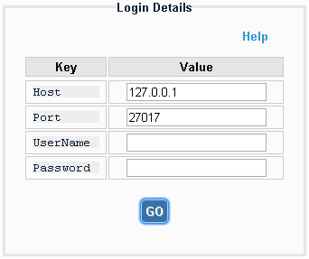If you haven’t been provided with credentials, the UserName and Password field can be left blank. By the way, to add a user to the admin database of mongoDB, read the help below.
To add a user, start the mongo process and follow the sequence in the screenshot below.
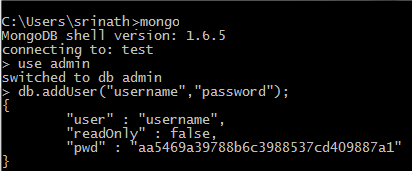Now you can login with these credentials as described in the previous help section.
You can add a new database by clicking on "New" button next to Databases on the left sidebar

Enter the new database name and click submit.

Hover on the database name to see a menu appear. Click on Drop Database from the menu as shown below.
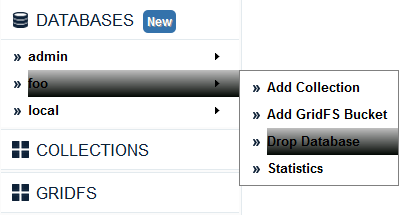Click Yes on the confirmation alert to delete the database. The database will be deleted and a confirmation of successful database deletion will be shown mentioning a page reload.
Just click on the database name to view the statistics. Alternatively, you can hover on the database name and click Statistics from the menu as shown below.
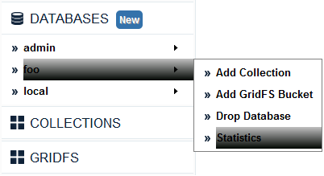You can add a new collection to a DB by clicking on Add Collection in the menu that appears when you hover over the database name.
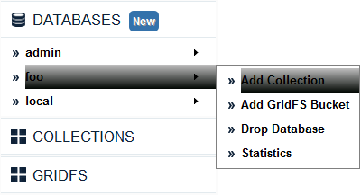Enter the new collection name and click submit. To create a fixed size capped collection, check Capped and enter collection size and max no. of documents in the collection.
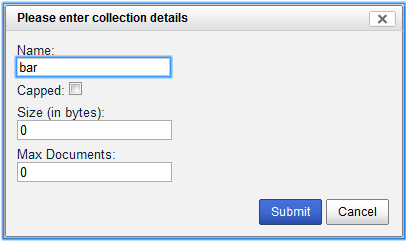Hover on the Collection name and click Drop Collection from the menu that appears as shown below.

Click Yes on the confirmation alert to delete the collection. The collection along with all its documents will then be dropped.
You can hover on the collection name and click Statistics from the menu as shown below.
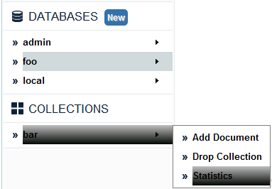You can add a new document to a collection by clicking on Add Document in the menu that appears when you hover over the collection name.
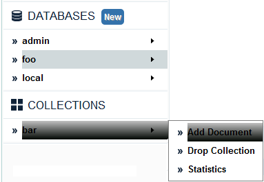Enter the document data in a valid JSON format.

Click on the Collection name to view the documents in it. By default, only 10 documents are shown per page. To see more documents per page, update Limit combo value to 25 or 50. Skip field allows you to skip the specified no. of documents from start. Add selectors/conditions in the query box to filter your results. Click on Execute Query button to update on results on modifying query, skip , limit or fields.

Use the navigation buttons below namely First, Previous, Next & Last to navigate to a particular set of documents in the collection.
You can edit a document in a collection by clicking on Edit button next to the documents list that are displayed when you click on a Collection Name

After editing, click on the Save/Cancel button to store/discard the changes respectively.
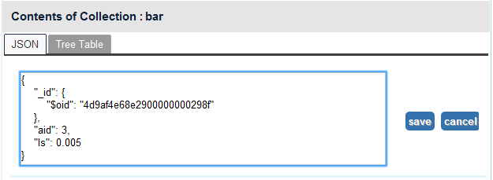Click on Delete button next to the listed documents to delete a specific document from a collection.
You can add a new collection to a DB by clicking on Add GridFS Bucket in the menu that appears when you hover over the database name.
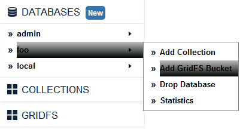Enter the bucket name and click submit.
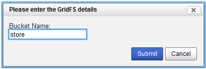Hover on the Collection name and click Drop Bucket from the menu that appears as shown below.
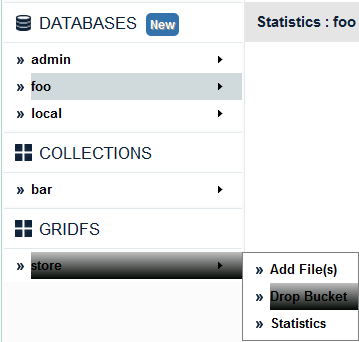Click Yes on the confirmation alert to delete the bucket. The bucket along with all its files will then be dropped.
Hover on the GridFS Bucket name and click Statistics from the menu.
You can add new file(s) to a bucket by clicking on Add File(s) in the menu that appears when you hover over the GridFS Bucket name.
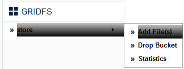In the file upload dialog that appears, click Add Files to select the files to be uploaded and then click on Start Upload.

You can cancel a specific file before starting upload, by clicking Cancel. You can even remove a specific file after uploading by clicking Delete.
You can view the files in a GridFS Bucket by clicking on the Bucket Name

You can open a file directly in the browser, by clicking the file name in Tree Table view or Open button in JSON view.
You can download a file by clicking on download button in JSON view or clicking
 icon in Tree Table view.
icon in Tree Table view.
You can delete a file by clicking on delete button in JSON view or clicking
 icon in Tree Table view.
icon in Tree Table view.
Try to use localhost.localdomain as the host name, in fact the best idea would be to look at your hosts file and use the first value.
You should be redirected back to login page automatically. Corrupted session just means that the token used for session tracking has been lost. No data at the db end would be compromised.
You can open up an issue at https://github.com/Imaginea/mViewer. Would be great if you attach the server logs to the issue.